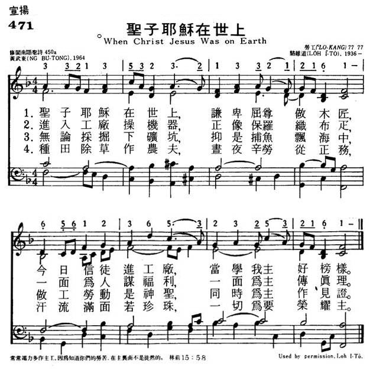
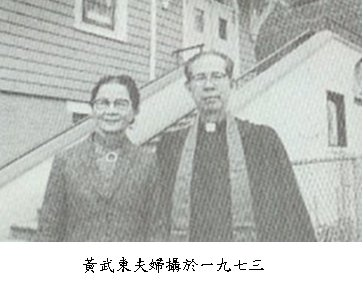
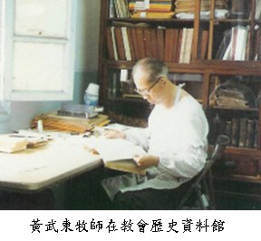

|
|
|
|
|
471圣子耶稣在世上 |
|
https://www.mred365.cn/szxg/7474.html
 |
|
|
|
|

◆成長背景
1909 年黃武東牧師出生在台南州東石郡義竹庄東後寮（現嘉義縣義竹鄉東光村）。生父姓李，生母黃頭（Thyio）。七日後受同庄的書香世家黃碖抱去養育，接黃後嗣。東啊出世翌年（1910年），日本完成其第一期第二波帝國主義，合吞朝鮮。到1931年，日本致力經營剝削其二個殖民地：台灣、朝鮮。東啊在此時段的年間成長。
1914年當東啊五、六歲時，受父親及大姊教讀〈人之初〉、〈千字文〉，也入「漢學仔」學習進一步的漢文。在此年第一次世界大戰發生，日本因日英同盟參加聯軍。其在國際地位如「旭光之盛」，愈來愈強。
1915 年年初東啊七歲時，黃家由李拐導全家信主，入牛挑灣教會。8月東啊由生死邊緣的急性胃腸炎好起來，父親就獻他給上帝，做主的傳道事工。在此年，平地對抗日 本統治，最後武力抵抗的西來奄事件發生。日本在同州焦吧年（現台南縣玉井鄉）執行男女老幼不分的大屠殺。親像二二八起義後的「清鄉」，全台灣受恐怖氣氛， 而度活。雖是按呢，南部教會在此年聚集於台南東門教會舉行設教50年感恩禮拜。
1916年東啊八歲時，步行就讀離東後寮北方六里路的牛挑灣公學校。1922年東啊考入謳歌現代化的台灣第一所中學台南長老教中學（現台南長榮中學）。在此年，台灣人要求保持台灣文化的「台灣議會」請願運動，受日本當局壓迫。在長中年間，武東君終生思念二位良師的教育：黃彰輝牧師的令尊黃俟命牧師及萬榮華校長（Rev. Edward Band）。

進入台南神學校
1926 年他長中畢業後，進入台南神學校（現台南神學院）。在學中，因為對二位老師無禮，受停學一學期。在學期間，1928年謝雪紅在上海組織「台灣共產黨」，而 後共產黨在台灣興盛。1929年東京帝國大學的矢內原忠雄（Yanaibara, Tadao）出版《帝國主義下的台灣》，批評日本對台灣的殖民政策。
1930 年他3月19日由南神畢業，二日後的3月21日與同由女子神學校畢業的林蘭玉小姐結婚，由校長滿雄才（W. E. Montgomery）牧師證婚。結婚證書是對抗當時的「國語」，由台語羅馬字寫的。同月底受派去澎湖瓦碉教會，任傳道師2年。同年10月，台灣山地對日本最後的武力抵抗霧社事件發生。
1931年他在澎湖傳道第二年，「南部台灣基督長老教會大會」成立。同年，日本開始進行其第二期第一波的帝國主義，「滿州事變」發生。從此年以後，皇國主義運動越來越興旺，教會的宣教與服務越來越困難。從此時起，終生纏著黃武東牧師的大主題之一是「教會與國家」（church and state）的問題。
日本當局對宣教的壓迫
1932年他由瓦碉轉任嘉義水上教會之前，長女西香出世。在水上2年間，次女燕卿、長男昭輝相接出世。在水上第二年（1933年），對抗日本人強迫「國語」教育，禁止講台語之潮流中，由巴克禮（Rev. Thomas Barclay）牧師所翻譯的台語羅馬字舊約聖經出版。
1935年他由水上轉任雲林斗六教會。在此年，武東傳道師的母校受日本當局強迫改變人事制度，恩師萬榮華校長下台，由日本退伍海軍上校加藤長太郎任校長。當年英國宣教師已看出時局不是給伊經營新醫院的時候，就讓渡南部大會。武東傳道師為此事參與募獻金。
1936年在皇民化運動越興旺之時，教會向福建邀請大眾佈道家宋尚節，以台語通譯方式，在台北、台中及台南舉行大型長期轟動台灣的佈道大會。武東傳道師也帶斗六的會友，專程來參加佈道大會。同年8月，日本當局強強接收加拿大長老教會所設立的淡水中學及女學院。
1937年3月3日在斗六教會他受封作牧師。同年7月7日盧溝橋七七事變發生。日本進入第二期第二波的帝國主義，正面大規模侵犯中國。當年8月，時局越來越緊張，日本當局在8月14日動員教會協助其推行「聖戰」，而組織「北支事變全台灣基督教奉仕會」。
1940年日本學習納粹德國，開始統制宗教。在同年9月6日武東牧師的母校台南神學校被迫閉校。日本也進行台灣寺廟的整頓。同年11月23日武東牧師的恩師萬榮華牧師等五位英國宣教師被迫離台返去英國。
1941年12月8日日本向聯軍宣戰。由此時，日本進入第二期第三波帝國主義。1943年日本當局強迫長老教會傳教者以神道禮儀方式洗腦：「全台灣基督教傳教師成會」。在斗六九年的中間，次男昭聲、三女喜美及三男昭光出世。
1944年4月，在日本敗戰氣氛濃厚的時，他膽敢接受嘉義教會的邀請赴牧，去面對聯軍的爆擊、都市食糧的欠缺、特務的干擾。1945年8月15日日本「現人神」昭 和天皇向聯軍宣布投降。因此，在1944年4月29日被迫成立的「日本基督教台灣教團」亦自然消失。武東牧師所牧的嘉義教會自然回歸長老教會嘉義中會。同年10月17日，與軍律嚴格之日本軍不同的蔣介石國民黨軍上陸占領台灣，至今日。
發起成立「台灣基督長老教會總會」
1947年2 月27-28日，「新時代」的來臨不一定是好的字眼。日本統治下的台灣，雖然受聯軍的爆炸，食糧欠缺仍有社會秩序，貨幣安定。總是一日國民黨軍占台，社會 突然在各方面混亂，「歡迎蔣介石大將軍」、「歡迎國軍」的聲一年半後，台灣人起義要求改革。二二八起義因為按呢發生。武東牧師所牧的嘉義，死傷特別多。牧 師的親友名畫家陳澄波也慘死。
1950年1月他受選做第十屆南部大會議長，同年4月13日就任第一任南大總幹事。對此時起，武東牧師越來 越有機會發揮上帝給他的特別恩賜（charisma），其洞察力、組織力、神學上是非的判斷力、應變力、講笑話的文雅是出類拔群的。同年7月23日夜，不 知上帝的旨意何在，成績優秀的長男昭輝在往嘉義投考高中之途中，在強烈的颱風中，受火車輾死，使武東牧師一大打擊。
1951年3月7日由 武東牧師所發起的南北兩大會組織的「台灣基督長老教會總會」成立，同時被選做第一屆議長。同年8月英國留學二年。在留英期間，同年9月12日，由武東牧師 所推進的，「台灣基督長老教會」受接納加入世界改革宗聯盟（World Alliance of Reformed Churches）。二日後的9月14日，也受接納入「普世教會聯盟」（World Council of Churches），由此時起台灣教會進出國際舞台了。
領導「教會倍加運動」（PKU）
1953年他由英國回台後，就參與東海大學創校籌備工作。1954年開始發起基督教台灣宣教百週年紀念「教會倍加運動」（PKU），並為此運動發表一篇名論文〈台灣宣教〉（四萬字）。1955年他的名著《台灣慣俗與民間傳說》由台灣教會公報社出版。
1957 年2月他受選做第一任台灣基督長老教會總幹事。黃總幹事是一位少見、會透視將來的「政務官」型的教會及社會的領導人才。他任內的「內閣」，有青年幹事張逢 昌牧師、教育幹事陳光輝牧師、傳道幹事鐘子時牧師伊四人構成馬力相當強的「機關車」，配合黃彰輝牧師所領導的南神。其衝力不但影響全體教會，亦影響到社 會。
1959年黃牧師與徐謙信牧師合著之名作《台灣基督長老教會歷史年譜》出版。
1965年6月由武東總幹事所領導的 PKU，在長中大操揚舉行「宣教百週年」大典時，果然獻出所倍加的教會與所倍加的信徒給上帝。此時可以通講是故人人生的最高峰。以後長老教會雖然有各種的 運動，但難再有親像武東牧師此款相當強力的機關車型的領導人才。二二八事件後，武東牧師所領導的台灣教界，對國民黨政權可說採取冷淡不合作的態度。在此年間，國民黨政權不斷用各種的方式壓力武東牧師「反共抗俄」。當時他常說：「傳福音本身就是最強的反共。」

服務三十六年盡程退休
1966年4月PKU後，由服務36年的長老教會退休。7月，往菲律賓牧會福建話的教會半年。1967年到1972年，任台灣基督教福利會主任。1972年往美國探兒孫。
1973年3月響應故鄉長老教會的〈國是聲明〉，在海外與林宗義教授、黃彰輝牧師等發起「台灣人民自決運動」。同年受聘紐約恩惠歸正教會（台語）牧會5年。1978年受聘往加州柑縣牧會台語教會2年。1980年7月由加州回紐約，繼續關懷大紐約的台灣人教會及社團。
1985 年《黃武東回憶錄》由洛杉磯台灣出版社出版。1987年他與黃彰輝牧師同儕，接受母校台南神學院榮譽神學博士之學位。1990年《黃武東回憶錄》台灣版， 由前衛出版社出版，1990年第3版。同時在彰化教會舉行鑽石婚感恩禮拜，在晚年間，尚努力在母校長中促進建立「台灣教會歷史館」。
1991 年11月畢生的同伴黃牧師娘蘭玉女士受主召。1994年9月由紐約回台，定居在昭聲任職基督教醫院院長的彰化。11月13日，過午夜的1時17分，在安眠 中，受主召回，去他的懷抱，結束滿85年，受主特別恩賜的生涯。11月28日入木、火化。12月10日下午二點由台灣基督長老教會總會葬，思念此偉大故人，對台灣教會與社會的貢獻。
http://www.laijohn.com/archives/pc/Ng/Ng,Btong/chronology/Tin,Jgiok.htm
上帝賜福台灣各境 |
首行： 上帝賜福台灣各境
原文： May God bless this Taiwan our home
調名： HÊNG-CHHUN(恆春)
韻律： 8888
作詞者：
N̂g Bú-tong(黃武東)，台灣，1962，修2002
作曲者：
Lo̍h Î-tō(駱維道)，台灣，1993
編曲者：
-- 無編曲者資料 --
和聲：
-- 無和聲資料 --
參考經文： 瑪拉基書3:12–12 , 詩篇85:10–13
歌詞：
台語
1.
上帝賜福台灣各境，
東西南北美麗風景；
春夏秋冬水秀山明，
歷史悠久人傑地靈。
2.
賜阮鄉土物產豐盛，
風調雨順五穀豐登；
族群和諧共存同榮，
安居樂業生活安寧。
3.
願阮官員尊主命令，
內外政治正義公平；
家庭社會無起紛爭，
全民受恩享受太平。
4.
願主道理到處通行，
男女老幼做主學生；
照主法度遵趁聖經，
賜阮台灣萬代昌盛。
華語
1.
上帝賜福台灣國境，東西南北秀麗美景；
春夏秋冬水秀山明，歷史悠久人傑地靈。
2.
賜我鄉土物產豐盛，風調雨順五穀豐登；
族群和諧同榮共存，安居樂業生活平穩。
3.
願從政者尊主命令，內政外交正義公平；
家庭社會不起紛爭，享受太平全民蒙恩。
4.
願主教誨人人遵行，男女老幼做主學生；
尊主法則服膺聖經，賜我台灣代代昌盛。
聖詩簡介： 1
518 上帝賜福台灣各境
這首歌詞乃黃武東牧師（1909-1994）於1961
年以「中華民國」台灣處境所創作的，當時在國民黨獨裁、專政、戒嚴、及白色恐怖之下，我們教會還不敢大聲呼籲台灣獨立的議題，所以即使作者與聖詩編輯委員當時期待這個「國」是台灣，但還無法擺脫國民黨所認定的「中華民國」包含對岸的「中國」的假想。黃牧師表達對悠久歷史的肯定、對鄉土大自然的愛好，族群和睦相處、以及對政治
的公義與世界的和平之期許，祈願上主的道理遍傳全國，並蒙主賜福。黃武東牧師是我們教會最傑出的詩人，其所寫的聖詩文詞精緻、韻律流暢，白話與文言混合應用，相得益彰，請詳讀本版《聖詩》377
首「鼓舞大家甘奉獻」、450 首「懇求上帝施恩賜福」、509 首「聖子耶穌地上」以及本詩，以體會、欣賞他的詩。
原詩「上帝賜福中國各省」出版在1961 年《增補聖詩》第二集第122 首時，是配上一首由柯納普（William Knapp,
1698-1708）所普的西洋曲調WAREHAM（1 | 1 7l 6l | 5l - 1 | 2 1 7l |
1-），筆者當時認為這種強烈認同「本國」的信仰表達用西洋的音樂著實不妥，乃向德姑娘提出異議，她笑著說：那你自己寫一首吧！就這樣接受挑戰，借用當時曾唱過的一首中國綏遠民謠「小路」第一樂句的動機55
1h54 2 5l. 改為 5u1uh 54 2 5.發展成為「中華民國」禱告的詩（1964 年版《聖詩》第427
首），但其調名還是稱為「府城」，因台南市是古代台灣的首都。
這個曲調提出委員會討論時，原作詞者反對，其他也有數位委員表示不喜歡這種曲調，第二次開會再討論仍然無法獲得共識，只好請在台南的委員小組再議。台南小組包含德明利、梅佳蓮、高主香、楊士養，他們後來終於決議採納拙作。
但民主運動後，台灣自主性的呼聲漸強，乃蒙作者的同意從「上帝賜福中國各省」改為「上帝賜福台灣各境」，「各」字有更重要的台語同音字，讓唱者有更強烈的聯想與認同。1993
年筆者對當時的編輯委員建議刪除自己以前所寫的中國調，與中國劃清界限，乃摘取台灣家戶喻曉的恆春民謠「思想起」開始五音的動機重新創作，賦予此詩一股強烈的本土味，娓娓道來台灣人自我認同的意志，為台灣國祈禱，故調名「恆春」。二聲部的對位前後紛紛道出台灣豐富的物產及多族群融合、共存同榮的景象，倘能以二弦與品仔伴奏更能活出台灣本土的生命。編輯委員會為加強台灣意識，破例修改黃牧師的許多用詞，從描述改為祈願，如「土地廣闊物產豐盛」，改為「賜阮鄉土物產豐盛」、「士農工商共存同榮」，改為「族群和諧共存同榮」、「全國百姓」改為「男女老幼」；最重要的
是結論「賜阮中國萬代昌盛」終於面對真實處境並正名、祈求「賜阮台灣萬代昌盛」。
禮拜中可作為相關主題講道後的回應，亦適用於新年、感恩節、二二八和平紀念日，或是有關台灣前途的禱告聚會。（LIT, LIK）